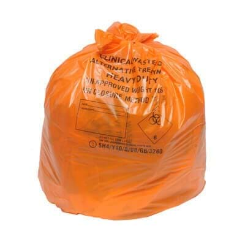
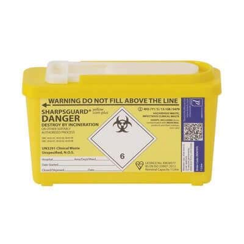
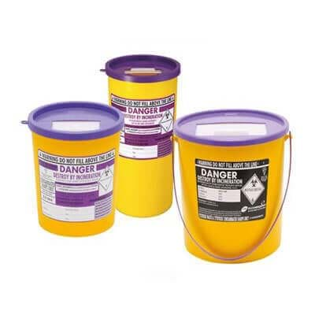

Infection Control Policy
Aims
The aim of Birtley House is to prevent and control the spread of infection amongst residents, staff and the local community. The aims of Birtley House are to ensure the following:
- Residents, their families and staff are safeguarded (as far as possible) from acquiring infections at the Home;
- All staff at Birtley House are aware of and put into practice the basic principles of infection control;
- Residents, family members, visitors and contractors are all provided with guidance to the basic principles of infection control.
Scope
This policy must be read and understood by all those working for Birtley House. Its principles and procedures must be followed by all contractors and third-parties working on site. Infection control guidance is provided to visitors upon entry.
The following legislation has been taken into consideration for this policy:
- The Health and Safety at Work Act 1974 the Public Health Infectious Diseases Regulations 1988 which places a duty on the Home to prevent the spread of infection;
- The Reporting of Incidents, Diseases and Dangerous Occurrences Regulation 1995 (RIDDOR) which places a duty on the Home to report outbreaks of certain diseases as well as accidents such as needle stick accidents;
- The Control of Substances Hazardous to Health Regulations 2002 (COSHH) which places a duty on the home to ensure that potentially infectious materials within the Home are identified as hazards and dealt with accordingly;
- The Environmental Protection Act 1900 which makes it the responsibility of the home to dispose of clinical waste safely.
The following guidance has been taken into consideration:
- The Health and Social Care Act 2008: Code of Practice on the prevention and control of infections and related guidance (Department of Health, December 2010) (‘The Code’);
- Public Health England’s Guidance on outbreaks of influenza (flu) in care homes.
Other policies to read in connection with the above policy:
- COSHH (Control of Substance to Hazardous to Health);
- Food Handling and Hygiene;
- Health and Safety at Work;
- Needle Stick Injuries;
- Sharps, Needle-stick Injuries and Blood Borne Viruses;
- Uniform and Personal Hygiene.
Responsibilities
| Registered Manager | Sylwia Indycka |
|---|---|
| Infection Control Lead | Carole Fulker, Housekeeping Manager |
All new staff are to read the policy on Infection Control. There is a requirement to complete infection control training on an annual basis. This is done as both an e-learning module and as practical training.
Effective Hand Washing
Birtley House believes that, consistent with modern infection control evidence and knowledge, hand washing is the single most important method of preventing the spread of infection. All staff should ensure that their hands are thoroughly washed and dried:
- Between seeing each and every resident where direct contact is involved, no matter how minor the contact;
- After handling any body fluids or waste or soiled items;
- After handling specimens;
- After using the toilet;
- Before handling any food stuffs;
- Before and after feeding a resident.
Hands should be washed according to the guidelines posted by each sink. Liquid soaps and disposable paper towels should be used in the home rather than bar soaps and fabric towels. Antiseptic hand washing solutions (such as gels) should be used only in situations where hand washing is not possible. They are never for general use.
All cuts or abrasions, particularly on the hands, should be covered with waterproof dressings at all times.
The Use of Personal Protective Equipment (PPE)
Disposable aprons and gloves are provided for all staff who are at risk of coming into direct contact with body fluids.
- Sterile gloves are provided for clinical procedures such as applying dressings. These should be worn at all times during resident contact and should be changed between residents. On no account should staff attempt to wash or reuse gloves;
- Non-sterile gloves are provided for washing dirty or used instruments, cleaning up blood or bodily fluids and for handling disinfectants.
Any member of staff who suspects that they or a resident might be suffering from an allergic reaction to latex gloves should stop using then immediately and inform the Manager. However, as most gloves are now non-latex these days this should not be an issue.
Cleaning of Spillages
All staff have a responsibility to keep the Home clean and tidy and to identify areas which fall below acceptable standards. Management of the routine cleaning of the home is the responsibility of the Housekeeping Manager.
Staff should treat every spillage of e.g. body fluids or waste as quickly as possible and as potentially infectious. They should wear protective gloves and aprons and use disposable wipes wherever possible. Eye protection should be worn if there is a risk of splashing.
For spillages of blood and or bodily fluids disinfectant granules are available to shake on to the spillage and dissolve into a gel. Remove with the disposable scraper/scoops provided. These can be found in the nurse’s Clinical room. Identify the hazard and dispose of into the correct bag. Ask housekeeping to wash the floor or shampoo the carpet as appropriate. Remember to wash hands before and after cleaning the spillage.
Cleaning & Disinfection of Equipment
- Commode Pots Bedpans and Urinals should be emptied into a toilet and then washed in the Sterilizers in the sluice room according to the manufacturer’s instruction;
- Mobile commodes must be cleaned daily and should never be shared between residents;
- Baths, Shower and Bowls must be cleaned before and after every use, by each resident, using the cleaning spray stored in the locked cupboards in every bathroom. Bowls should be kept in each resident’s room and cleaned daily with the spray in the bathroom, and never used by any other resident.
Laundry
All nursing/care staff are responsible for the safe handling of dirty linen. Dirty linen must be handled with care and attention paid to the potential spread of infection.
- Disposable gloves and aprons should be worn when handling dirty or contaminated clothing and linen;
- Linen should never be placed on the floor;
- Soiled linen must be put into the correct coloured individual plastic bags before being carried to the sluice rooms;
- Clear bags are for non-contaminated linen/clothing;
- Red bags are for any contaminated linen/clothing;
- These bags should be placed into the coloured matching bags in the sluice rooms;
- All washing should be laundered as to the manufacturer’s instructions, and only by persons who have been shown the correct use of the washing and drying machines.
Clinical Waste
Clinical waste should be disposed of in sealed Yellow plastic bags and each bag should be clearly labelled with the Home’s full details (sometimes this can be an identification number only). Non-clinical waste should be disposed of in normal Black plastic bags. All yellow bags should be no more the three quarters full; these yellow bags should be sealed and stored safely to await collection by an authorised collector. Yellow bags should only be used in pedal-type bins in clinical areas. Red/Orange bags are used only to store hazardous materials.
Full bags should be stored temporarily in Sluice Rooms and removed as soon as practicable by Housekeeping staff to the Bin Compound.Typically needles, blades and broken ampoules – should be disposed of in the proper purpose built sharps disposal containers complying with BS7320. While awaiting collection they should be stored in: The yellow storage containers outside.
- Staff should never re-sheath needles;
- Boxes should never be filled beyond the stated lines;
- When full, boxes should be sealed, marked as hazardous and clearly labelled with the Home’s details (this could be just a number);
- Sharps boxes must be always placed out of the way of residents, visitors and especially any children who may be attracted by the bright colours;
- Used, filled boxes should be stored securely until collection for incineration.
In the event of injury with a used or potentially contaminated needle staff should do the following:
- Wash the area immediately and encourage bleeding if the skin is broken;
- Report to the Home Manager immediately and fill in an incident form;
- Report immediately to a GP, Occupational Health Department or if none are available, the Local Accident and Emergency Department.
|  |  |  | ||
| General waste black bag |
Non-infectious ('offensive') clinical waste 'tiger stripe' bag |
Hazardous clinical waste orange bags |
Sharps disposal yellow lids |
Redundant medication disposal purple lids |
|---|
The Handling and Storage of Specimens
Specimens should only be collected if ordered by the resident’s GP. All specimens should be clearly labelled and packed into self-sealing bags and stored in the designated fridge prior to being taken to the GP for collection by the local laboratory. This should always be done on the same day. Non-sterile gloves should be worn when handling specimen containers and hands should be washed afterwards. All specimens should be treated with equally high levels of caution at all times.
Food Safety
Any storage or handling of food raises a potential risk of poisoning, so the highest standards of hygiene must be observed by all staff at all times. Food stuff brought into the home by staff should be stored in the food staff fridge, never in the specimen’s fridge. Any ‘out of date’ food should be disposed of. Staff should follow all food storage recommendations and scrupulously observe sell by dates. All food kept in fridges should be correctly labelled with a three-day shelf life from opening.
Any staff suffering from food poisoning, diarrhoea or vomiting should report to the home and see their GP immediately.
The Duty Chef is responsible for the storage, preparation and serving of the food.
Visitors
Most relatives and friends appreciate the risk of spreading infection to vulnerable people. Potential visitors should be advised to telephone for advice before visiting if they have current symptoms of infection.
Visitors should be requested to help staff to keep the risk of spread of infection to a minimum and it may be helpful to display notices asking visitors who have symptoms of infection, particularly relating to respiratory or gastrointestinal tract, skin or eyes, to speak to the nurse or person in charge before seeing any residents. This applies especially to young children who are more likely to spread infection to elderly relatives.
It may be necessary for staff to explain that under certain circumstances visits should be restricted or postponed.
All visitors should be encouraged to either wash their hands or use an alcohol hand rub at the start and the end of each visit.
Reporting
The Reporting of Injuries, Diseases and Dangerous Occurrences Regulations 1995 (RIDDOR) obliges that Birtley House report the outbreak of notifiable diseases to the Health and Safety Executive.
The list of notifiable diseases includes:
- Cholera;
- Food poisoning;
- Smallpox;
- Typhus;
- Dysentery;
- Measles;
- Meningitis;
- Mumps;
- Rabies;
- Tetanus;
- Typhoid fever;
- Viral haemorrhagic fever;
- Hepatitis;
- Whooping cough;
- Leptospirosis;
- Tuberculosis;
- Yellow fever
Records of any and all such outbreaks must be kept, specifying dates and times and a completed disease report form must be sent to the Health and Safety Executive.
In the event of an incident: Sylwia Indycka is responsible for informing the HSE:
Outbreak Actions
Effective communication of the outbreak needs to be made to all staff including, where relevant, agency staff and contractors outlining some of the key actions that may be necessary during an outbreak, which may involve the following actions:
- reinforce hand and respiratory hygiene messages for residents, staff and visitors;
- isolation of residents with infections;
- review of the care provided to residents with regard to IPC practices;
- enhanced cleaning schedules;
- provision of specific advice on the necessary control measures;
- enhanced observation to identify suspected new cases and if confirmed, implement necessary control measures;
- advise affected staff on exclusion from work;
- closure to new admissions;
- implement remote working options for non-frontline staff;
- postpone day care visits and outside trips;
- delay readmission of a resident following discharge/transfer from hospital;
- restrict and/or stop visitors;
- postpone visits from outside service providers e.g. hairdresser, podiatrist, etc.
In the event of a suspected outbreak of an infectious disease at Birtley House the local consultant in communicable diseases control or communicable diseases should be contacted immediately:
| Name | Surrey and Sussex HPT (South East) |
|---|---|
| Address | Public Health England
County Hall North Chart Way Horsham West Sussex RH12 1XA |
| PHE.sshpu@nhs.net | |
| Telephone | 0344 225 3861 (option 1 to 4 depending on area) |
| Out of hours advice | 0844 967 0069 |
Isolation of Residents
This is done if/when a resident has an infectious disease and to stop the spread from one to another. This should be a single room, with hand washing facilities and where possible an en-suite lavatory and shower, for their own use. By doing this the spread should be kept to a minimum.
- There should be a notice on the door advising “Please see Nurse before entering”. This door should be kept closed as all times;
- All staff and visitors should wash hands before entering and when leaving the room;
- Disposable gloves and aprons should be worn at all times during contact with the resident, especially when performing personal care needs;
- All laundry should be placed into red bags and treated as contaminated;
- Staff should at all times follow the guidelines set down by the Health and Safety Executive and Birtley House as to infectious diseases;
- Make sure the resident and visitors, where possible, are kept up to date on why the list procedure is being followed.